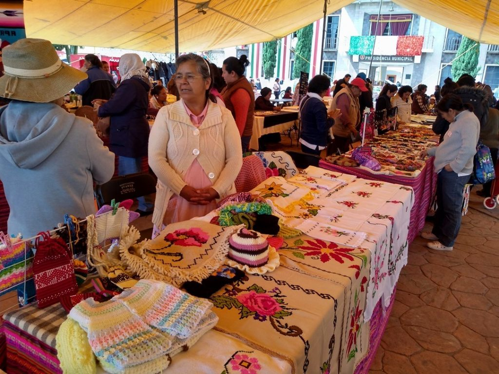
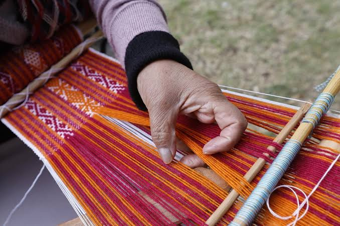

¡Bienvenidos!
Bienvenidos a nuestra página web acerca de la cultura otomí.
Aquí encontrarás información sobre su historia, sus tradiciones, su vestimenta y su lengua.

Lugares para visitar
Conoce los lugares representativos de la cultura otomí.

Tradiciones
Descubre las costumbres y celebraciones del pueblo otomí.

Vestimenta
Conoce la vestimenta tradicional de las comunidades otomíes.